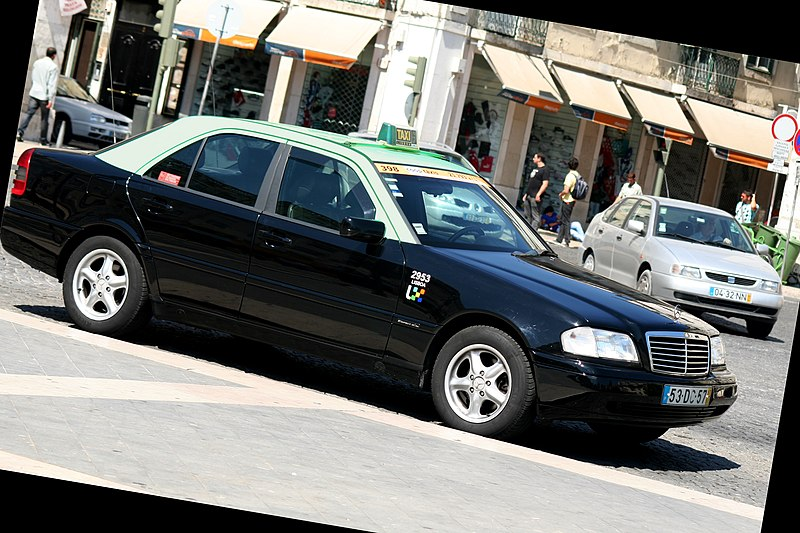

Táxi
Nesta secção iremos falar sobre os táxis e de que maneira uma pessoa poderá pedir um táxi.
Primeiramente a defenição básica que todos devem saber mas nada mais que informativo, os táxis nada mais são que automóveis de aluguer
que geralmente estão implementados com um taxímetro que é aparelho que registra o preço a ser pago pelo percurso em táxi e/ou pelo tempo em que este esteve ocupado.
Mas então como é feito, bem isso é um pouco complicado e simples, a parte complicada é que nós em portugal temos dezenas de empresas de táxi e cada uma delas depende
em que cidade está, agora a partes simples é que a única coisa que precisa de fazer é ligar para o número de táxis da sua cidade e pedir 1 e é claro dizer se tem
algum tipo de dificuldade motora, para que, lhe seja providenciado um táxi que atenda ás suas necessidades.
Por exemplo se está por volta do Porto você tem a opção RADITAXIS que ofereçe vários serviços quer seja para pessoas normais quer seja para pessoas com mobilidade reduzida
e até mesmo eles têm veículos de luxo, veiculos de carga caso queira levar muita coisa, e também tem veículos standard e ecológicos.

Linha de Atendimento RadiTaxis:Geral:225 073 900 | Vodafone:917 555 085/6 | Meo:969 661 666/7 | Nos:935 073 900/1
Site RadiTaxis: https://www.raditaxis.pt/index.php
Mas não vamos ficar só por aqui, será aqui disponibilizado aqui em baixo um link para a incontável empresas de táxis para que possam ter acesso,
atenção que estas empresas estão divididas por concelho, mas quilo que tem que fazer é copiar o nome da empresae o concelho colocar no maps e imediatamente encontrarão
um número da empresa de táxis para ligar, adicionalmente como aquile documento é muito grande e se estiverem no computador, recomento que usem
o "Ctrl + F" para abir uma aba de pesquisa e e colocarem o nome do vosso concelho para ser mais fácil a pesquisa.
Este documento é disponibilizado pelo Imt e é de 2021, ou seja pode haver algumas empresas de táxi que até a data de criação deste trabalho 2024, que já possam não estar mais ativas.
Site Taxis por concelho IMT: https://www.imt-ip.pt/sites/IMTT/Portugues/TransportesRodoviarios/EmpresasLicenciadas/Documents/Junho%202021/Empresas_TAXIS_OrdEmp.pdf